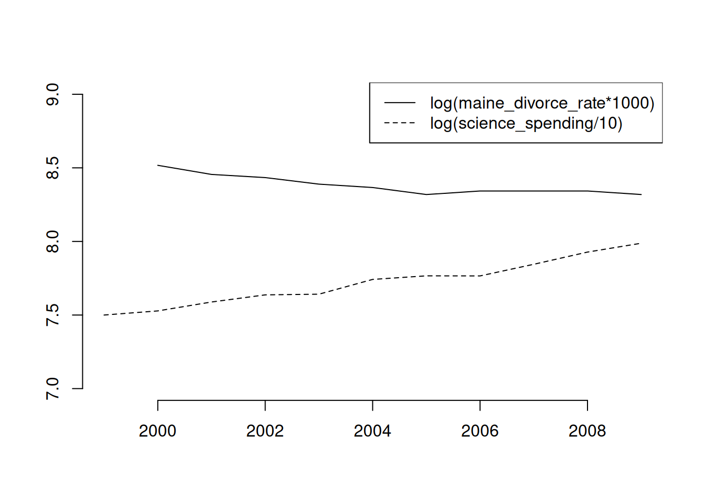
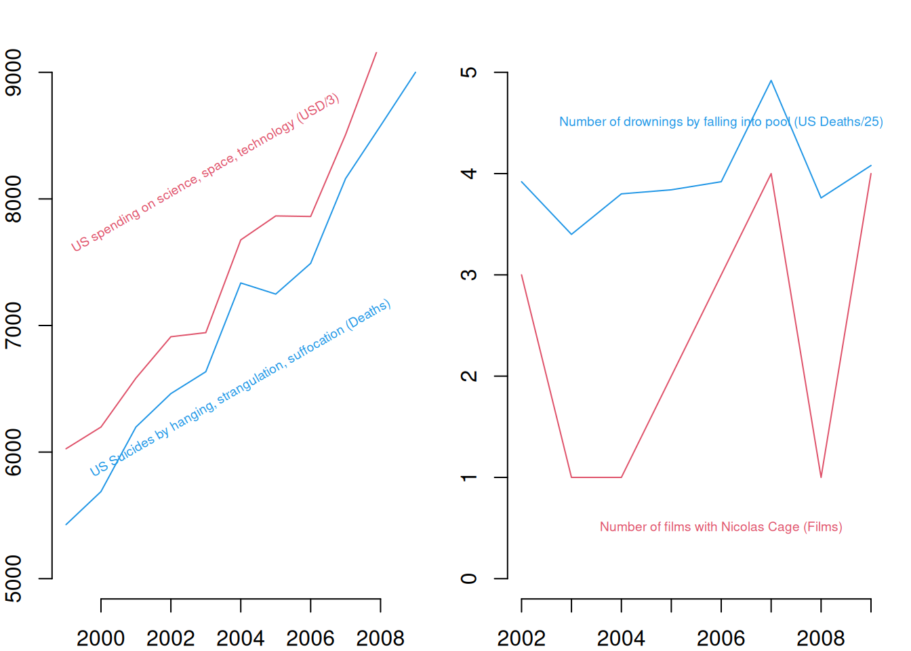
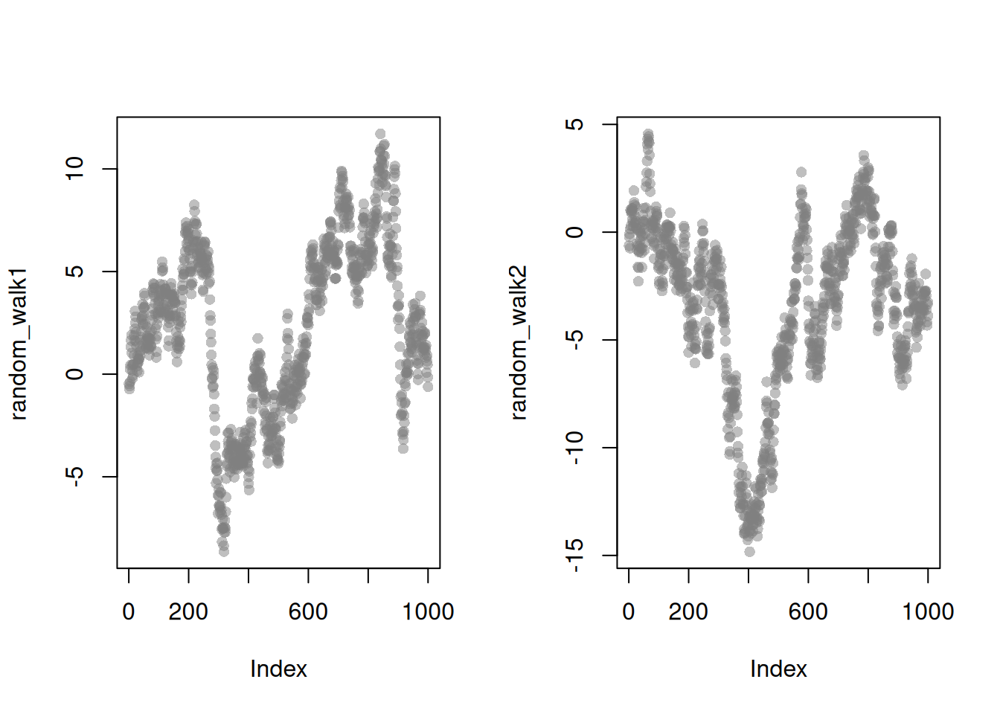
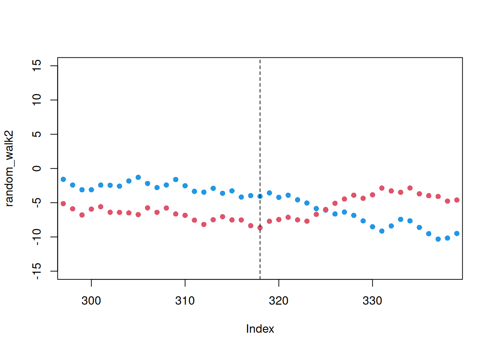

6 Data scientism
6.1 US Gov’t Spending on Science
Lets inspect some data from https://tylervigen.com/spurious-correlations
## Your data is not made up in the computer (hopefully!)
## will normally be an address on your PC
vigen_csv <- read.csv( paste0(
'https://raw.githubusercontent.com/the-mad-statter/',
'whysospurious/master/data-raw/tylervigen.csv') )
class(vigen_csv)## [1] "data.frame"names(vigen_csv)## [1] "year" "science_spending"
## [3] "hanging_suicides" "pool_fall_drownings"
## [5] "cage_films" "cheese_percap"
## [7] "bed_deaths" "maine_divorce_rate"
## [9] "margarine_percap" "miss_usa_age"
## [11] "steam_murders" "arcade_revenue"
## [13] "computer_science_doctorates" "noncom_space_launches"
## [15] "sociology_doctorates" "mozzarella_percap"
## [17] "civil_engineering_doctorates" "fishing_drownings"
## [19] "kentucky_marriage_rate" "oil_imports_norway"
## [21] "chicken_percap" "train_collision_deaths"
## [23] "oil_imports_total" "pool_drownings"
## [25] "nuclear_power" "japanese_cars_sold"
## [27] "motor_vehicle_suicides" "spelling_bee_word_length"
## [29] "spider_deaths" "math_doctorates"
## [31] "uranium"vigen_csv[1:5,1:5]## year science_spending hanging_suicides pool_fall_drownings cage_films
## 1 1996 NA NA NA NA
## 2 1997 NA NA NA NA
## 3 1998 NA NA NA NA
## 4 1999 18079 5427 109 2
## 5 2000 18594 5688 102 2## similar `apply' functions
lapply(vigen_csv[,1:5], class) ## like apply, but for lists## $year
## [1] "integer"
##
## $science_spending
## [1] "integer"
##
## $hanging_suicides
## [1] "integer"
##
## $pool_fall_drownings
## [1] "integer"
##
## $cage_films
## [1] "integer"sapply(vigen_csv[,1:5], class) ## lapply, formatted to a vector## year science_spending hanging_suicides pool_fall_drownings
## "integer" "integer" "integer" "integer"
## cage_films
## "integer"The US government spending on science is ruining cinema (p<.001)!?
## Drop Data before 1999
vigen_csv <- vigen_csv[vigen_csv$year >= 1999,]
## Run OLS Regression $
reg1 <- lm(cage_films ~ -1 + science_spending,
data=vigen_csv)
summary(reg1)##
## Call:
## lm(formula = cage_films ~ -1 + science_spending, data = vigen_csv)
##
## Residuals:
## Min 1Q Median 3Q Max
## -1.7670 -0.7165 0.1447 0.7890 1.4531
##
## Coefficients:
## Estimate Std. Error t value Pr(>|t|)
## science_spending 9.978e-05 1.350e-05 7.39 2.34e-05 ***
## ---
## Signif. codes: 0 '***' 0.001 '**' 0.01 '*' 0.05 '.' 0.1 ' ' 1
##
## Residual standard error: 1.033 on 10 degrees of freedom
## (1 observation deleted due to missingness)
## Multiple R-squared: 0.8452, Adjusted R-squared: 0.8297
## F-statistic: 54.61 on 1 and 10 DF, p-value: 2.343e-05It’s not all bad, people in maine stay married longer?
plot.new()
plot.window(xlim=c(1999, 2009), ylim=c(7,9))
lines(log(maine_divorce_rate*1000)~year, data=vigen_csv)
lines(log(science_spending/10)~year, data=vigen_csv, lty=2)
axis(1)
axis(2)
legend('topright', lty=c(1,2), legend=c(
'log(maine_divorce_rate*1000)',
'log(science_spending/10)'))
For more intuition on spurious correlations, try http://shiny.calpoly.sh/Corr_Reg_Game/
par(mfrow=c(1,2), mar=c(2,2,2,1))
plot.new()
plot.window(xlim=c(1999, 2009), ylim=c(5,9)*1000)
lines(science_spending/3~year, data=vigen_csv, lty=1, col=2, pch=16)
text(2003, 8200, 'US spending on science, space, technology (USD/3)', col=2, cex=.6, srt=30)
lines(hanging_suicides~year, data=vigen_csv, lty=1, col=4, pch=16)
text(2004, 6500, 'US Suicides by hanging, strangulation, suffocation (Deaths)', col=4, cex=.6, srt=30)
axis(1)
axis(2)
plot.new()
plot.window(xlim=c(2002, 2009), ylim=c(0,5))
lines(cage_films~year, data=vigen_csv[vigen_csv$year>=2002,], lty=1, col=2, pch=16)
text(2006, 0.5, 'Number of films with Nicolas Cage (Films)', col=2, cex=.6, srt=0)
lines(pool_fall_drownings/25~year, data=vigen_csv[vigen_csv$year>=2002,], lty=1, col=4, pch=16)
text(2006, 4.5, 'Number of drownings by falling into pool (US Deaths/25)', col=4, cex=.6, srt=0)
axis(1)
axis(2)
And don’t Forget ``if you torture the data long enough, it will confess.’’
## Include an intercept to regression 1
reg2 <- lm(cage_films ~ science_spending, data=vigen_csv)
suppressMessages(library(stargazer))
stargazer(reg1, reg2, type='html')| Dependent variable: | ||
| cage_films | ||
| (1) | (2) | |
| science_spending | 0.0001*** | 0.0001 |
| (0.00001) | (0.0001) | |
| Constant | -0.140 | |
| (2.166) | ||
| Observations | 11 | 11 |
| R2 | 0.845 | 0.124 |
| Adjusted R2 | 0.830 | 0.026 |
| Residual Std. Error | 1.033 (df = 10) | 1.089 (df = 9) |
| F Statistic | 54.609*** (df = 1; 10) | 1.271 (df = 1; 9) |
| Note: | p<0.1; p<0.05; p<0.01 | |
Nevertheless, data transformation is often necessary before regression analysis. For downloading tips, see https://raw.githubusercontent.com/rstudio/cheatsheets/main/data-import.pdf
6.2 OLS in the age of big data
Consider random datasets
make_noisy_data <- function(n){
x <- seq(1,10, length.out=n)
e <- rnorm(length(x), mean=0, sd=10)
y <- .25*x + e
xy_mat <- data.frame(ID=seq(x), x=x, y=y)
return(xy_mat)
}
dat1 <- make_noisy_data(6)
dat1## ID x y
## 1 1 1.0 5.2779810
## 2 2 2.8 -6.6752695
## 3 3 4.6 -0.1832388
## 4 4 6.4 8.7389111
## 5 5 8.2 11.6327149
## 6 6 10.0 -0.1492892dat2 <- make_noisy_data(6)
## merging data in wide format
dat_merged_wide <- merge(dat1, dat2,
by='ID', suffixes=c('.1','.2'))Data Merging
## merging data in long format and reshaping to wide
dat_merged_long <- rbind( cbind(dat1,DF=1),cbind(dat2,DF=2))
library(reshape2)
dat_melted <- melt(dat_merged_long, id.vars=c('ID', 'DF'))
dat_merged_wide2 <- dcast(dat_melted, ID~DF+variable)
dat_merged_wide == dat_merged_wide2## ID x.1 y.1 x.2 y.2
## [1,] TRUE TRUE TRUE TRUE TRUE
## [2,] TRUE TRUE TRUE TRUE TRUE
## [3,] TRUE TRUE TRUE TRUE TRUE
## [4,] TRUE TRUE TRUE TRUE TRUE
## [5,] TRUE TRUE TRUE TRUE TRUE
## [6,] TRUE TRUE TRUE TRUE TRUERegression Machines
n <- 50
p <- 1
i <- 0
## P-hacking
while(p >= .001){
set.seed(i)
rdf <- data.frame( sapply(1:2, function(i) runif(n) ) )
reg_h <- lm(X1~X2, rdf)
p <- summary(reg_h)$coefficients[2,4]
i <- i+1
}
plot(X1~X2, data=rdf, main=paste0('Random Dataset ', i))
reg_h <- lm(X1~X2, rdf)
abline(a=coef(reg_h)[1], b=coef(reg_h)[2])
6.3 Causal effects sans theory
RDD
n <- 1000
n_index <- seq(n)
set.seed(1)
random_walk1 <- cumsum(runif(n,-1,1))
set.seed(2)
random_walk2 <- cumsum(runif(n,-1,1))
par(mfrow=c(1,2))
plot(random_walk1, pch=16, col=grey(.5,.5))
plot(random_walk2, pch=16, col=grey(.5,.5))
## Let the data take shape
## (around the large differences before and after)
n1 <- 290
wind1 <- c(n1-300,n1+300)
dat1 <- data.frame(t=n_index, y=random_walk1, d=1*(n_index > n1))
dat1_sub <- dat1[ n_index>wind1[1] & n_index < wind1[2],]
## Then find your big break
reg0 <- lm(y~t, data=dat1_sub[dat1_sub$d==0,])
reg1 <- lm(y~t, data=dat1_sub[dat1_sub$d==1,])
## The evidence should show openly (it's just science)
plot(random_walk1, pch=16, col=grey(.5,.5), xlim=wind1)
abline(v=n1, lty=2)
lines(reg0$model$t, reg0$fitted.values, col=2)
lines(reg1$model$t, reg1$fitted.values, col=4)## Dress with some statistics for added credibility
rdd_sub <- lm(y~d+t+d*t, data=dat1_sub)
rdd_full <- lm(y~d+t+d*t, data=dat1)
stargazer::stargazer(rdd_sub, rdd_full,
type='html',
title='Recipe RDD',
header=F,
omit=c('Constant'),
notes=c('First column uses a dataset around the discontinuity.',
'Smaller windows are more causal, and where the effect is bigger.'))| Dependent variable: | ||
| y | ||
| (1) | (2) | |
| d | -13.169*** | -9.639*** |
| (0.569) | (0.527) | |
| t | 0.011*** | 0.011*** |
| (0.001) | (0.002) | |
| d:t | 0.009*** | 0.004* |
| (0.002) | (0.002) | |
| Observations | 589 | 1,000 |
| R2 | 0.771 | 0.447 |
| Adjusted R2 | 0.770 | 0.446 |
| Residual Std. Error | 1.764 (df = 585) | 3.081 (df = 996) |
| F Statistic | 658.281*** (df = 3; 585) | 268.763*** (df = 3; 996) |
| Note: | p<0.1; p<0.05; p<0.01 | |
| First column uses a dataset around the discontinuity. | ||
| Smaller windows are more causal, and where the effect is bigger. | ||
DID
## Find a reversal of fortune
## (A good story always goes well with a nice pre-trend)
n2 <- 318
wind2 <- c(n2-20,n2+20)
plot(random_walk2, pch=16, col=4, xlim=wind2, ylim=c(-15,15))
points(random_walk1, pch=16, col=2)
abline(v=n2, lty=2)
## Knead out any effects that are non-causal
## (or even just correlation)
dat2A <- data.frame(t=n_index, y=random_walk1, d=1*(n_index > n2), RWid=1)
dat2B <- data.frame(t=n_index, y=random_walk2, d=0, RWid=2)
dat2 <- rbind(dat2A, dat2B)
dat2$RWid <- as.factor(dat2$RWid)
dat2$tid <- as.factor(dat2$t)
dat2_sub <- dat2[ dat2$t>wind2[1] & dat2$t < wind2[2],]
## Report the stars for all to enjoy
## (and remind that stable coefficients are the good ones)
did_fe1 <- lm(y~d+tid, data=dat2_sub)
did_fe2 <- lm(y~d+RWid, data=dat2_sub)
did_fe3 <- lm(y~d*RWid+tid, data=dat2_sub)
stargazer::stargazer(did_fe1, did_fe2, did_fe3,
type='html',
title='Recipe DID',
header=F,
omit=c('tid','RWid', 'Constant'),
notes=c(
'Fixed effects for time in column 1, for id in column 2, and both in column 3.',
'Fixed effects control for most of your concerns.',
'Anything else creates a bias in the opposite direction.'))| Dependent variable: | |||
| y | |||
| (1) | (2) | (3) | |
| d | 1.804* | 1.847*** | 5.851*** |
| (0.892) | (0.652) | (0.828) | |
| Observations | 78 | 78 | 78 |
| R2 | 0.227 | 0.164 | 0.668 |
| Adjusted R2 | -0.566 | 0.142 | 0.309 |
| Residual Std. Error | 2.750 (df = 38) | 2.035 (df = 75) | 1.827 (df = 37) |
| F Statistic | 0.287 (df = 39; 38) | 7.379*** (df = 2; 75) | 1.860** (df = 40; 37) |
| Note: | p<0.1; p<0.05; p<0.01 | ||
| Fixed effects for time in column 1, for id in column 2, and both in column 3. | |||
| Fixed effects control for most of your concerns. | |||
| Anything else creates a bias in the opposite direction. | |||